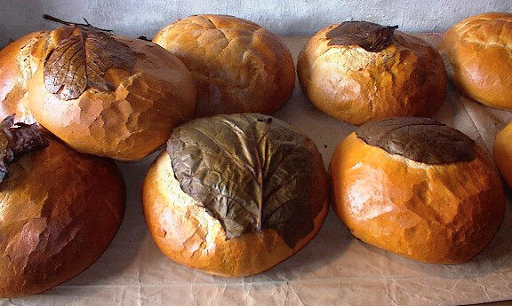

Nou dit qu'la beurrée est la bouochie préféthée des gens au jour d'aniet, et nou peut vaie qu'achteu j'avons des boutiques - des sannouich'chies - tch'ont ouvèrt en Ville à seule fîn d'vendre des beurrées ès cheins tchi travâlent dans l's offices.
Ches bouochies sont si populaithes qu'j'avons deux mots en Jèrriais - la beurrée et la sannouiche. Y'a-t-i' eune difféthence? Né v'là-t-i' eune tchestchion à êtibotchi d's ardguments!
En tout cas lé mot sannouiche veint du nom du Comte dé Sandwich, tchi soulait aimer tant jouer ès cartes qu'i' n'voulait pon tchitter la gamme et c'mandait d'la viande entre deux tranchies d'pain rôti - eune bouochie qu'i' pouvait mangi sans graîssi sa pouongnie d'cartes.
Not' sannouiche n'est pon l'seul mot tch'a 'té “amendé” du nom d'la ville Angliaîche dé Sandwich . Par exempl'ye, lé Portûndgais a “sanduiche” et lé Polonnais a san “sendwicz” étout. Lé vièr Comte éthait-i' r'connu san titre dans ches mots? Et tch'est qu'il éthait pensé, chu nobl'ye du dgiêx-huitchième siècl'ye, des r'chettes exotiques qu'nou-s'acate siez les sannouichièrs d'Jèrri au jour d'aniet - coumme des beurrées d'Brie et cannebèrges, des beurrées d'fronmage dé biche et lédgeunmes au fou, et des beurrées d'poulet tikka?
Ouaithe qu'nou piêsse dithe sannouiche ou beurrée, l'împortant ch'est chein qu'nou met d'dans. Y'a-t-i' eune miyeu beurrée qu'eune sannouiche dé lard feunmée auve d'la sauce dé tonmate ou d'la breune sauce? Ou p't-êt' du pain Jèrriais douothé d'nièr beurre? Tch'est qu'ous en pensez, bouonnes gens?
Geraint Jennings
Viyiz étout: